A Look at the Interface
I chose to observe the CVS self checkout machine for this project. I made quick sketch shown below to outline the important features.
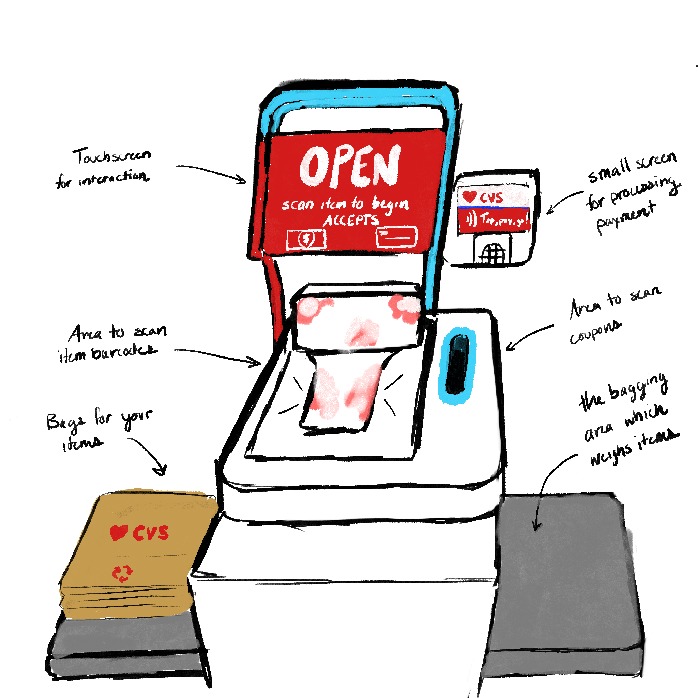
This interface is trying to give users a speedy self-guided checkout experience. It has to guide users through the various stages of checkout.
The main screen prompts the user to move through the stages: scanning items, using coupons, payment, and bagging. The IR scanner front and center is used for scanning barcodes on the items in the customer's cart. Next to the IR scanner there is a highlighted area where coupons can be fed in. There is a small side mounted screen and keypad combo for processing various forms of payment. This machine also makes sure that the weights of the items placed in the bagging area match expectations.
Observations and Interviews
To better understand how users interact with the interface I observed people using it. I made sure to make note of any struggles and difficulties they encountered. Here is a brief list of the observations I made:
- When problems arise with the interface, there is not much time given for users to fix the problems. Once an error occurs, the machine locks up and repeatedly says “please wait, help is on the way” while the LED bar at the top flashes orange. Each customer that encountered this seemed frustrated and embarrassed, looking around apologetically at everyone in the checkout area.
- Some customers were also confused with the bagging area, which does not allow a bag to be placed on it as this throws off the weight it's tracking. Many customers placed a bag on the platform and were then prompted to “remove the unscanned item from the bagging area.”
- Most customers seem to be frequent users of the interface and are able to quickly select buttons on the screen through muscle memory once their items have been scanned.
Once I had made my observations I conducted interviews to understand the user's perspectives on the interface. Below are the questions I asked as well as summarized answers
-
Why did you opt for self checkout over employee checkout?
- Some users would go to self checkout based on the size or number of items they had in their cart.
- Others would go to self checkout because the items themselves were embarrassing or personal.
- Some expressed that they didn't always feel up to the social interaction of employee checkout.
- All felt that self checkout would be quicker than employee checkout.
-
In what circumstances would you opt for employee checkout instead?
- If they were buying something they knew would require employee assistance anyway (like age restricted items). This shows that having to interact with an employee defeated the purpose of self checkout.
- If the line was very long for self checkout it no longer seemed like a quicker option.
-
When something goes wrong with the checkout process, how confident are you that you can resolve the issue before the interface prompts for an employee assistant?
- Everyone was only somewhat confident they would be able to before an employee was called over. This highlights the lack of trust the machine has in the customers.
- The “unscanned item in bagging area” error seemed most likely to be resolved in time, while an item not being in the system always required employee assistance.
-
How satisfied are you with the interface's method of calling over an employee?
- Everyone was frustrated and embarrassed by the method of calling over an employee. One person noted in particular that it felt like “public shaming.”
- Some noted that even though it was loud and obnoxious it was generally ineffective at getting an employee's attention, and often required seeking out one in the store.
- The main point here is that these errors defeated the purpose of self checkout for the customers and made them wish they had opted for employee checkout instead.
-
What is your interpretation of the “bagging area” described by the interface?
- Customers correctly identified the scale to the right side of the kiosk as the bagging area.
- All described it as a place to put items after being scanned.
- If they attempted to actually bag items there they noted that the machine would complain about the weight of the bag on the scale.
-
Once all your items have been scanned, are you quickly able to make payment and clear the kiosk for the next person in line?
- Everyone felt they could checkout extremely quickly once their items were scanned. The interface was responsive and let them do exactly what they wanted to do.
- This highlights the fact that the interface is polished when nothing unexpected happens. If the error handling and edge cases could be improved it would make the user experience drastically better.
Personas
Based on the observations I made and the interviews I conducted, I constructed two personas to represent some of the archetypal characters that use the CVS self checkout machine.
The first persona I created was Busy Ben. This was trying to archetype the customer who picks up only a few items and wants to get through checkout as quick as possible. This was the case for many of the users I observed. This was also backed up with the interviews where people's primary reason for choosing self-checkout was getting through checkout quicker.
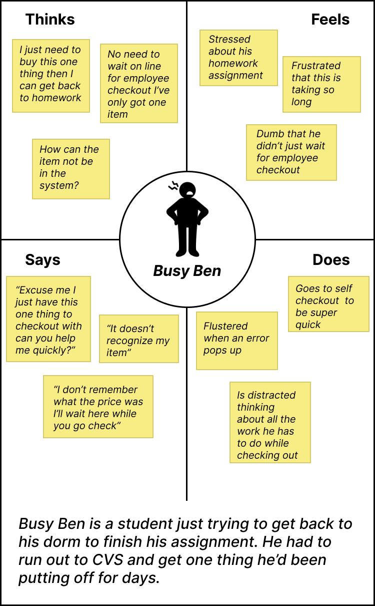
The second persona I created was Embarrassed Eric. Many of the users noted in the interview that if they were buying personal items they would be more likely to use self checkout, which I inferred was because it is embarrassing to interact with an employee and show them the items you are purchasing.
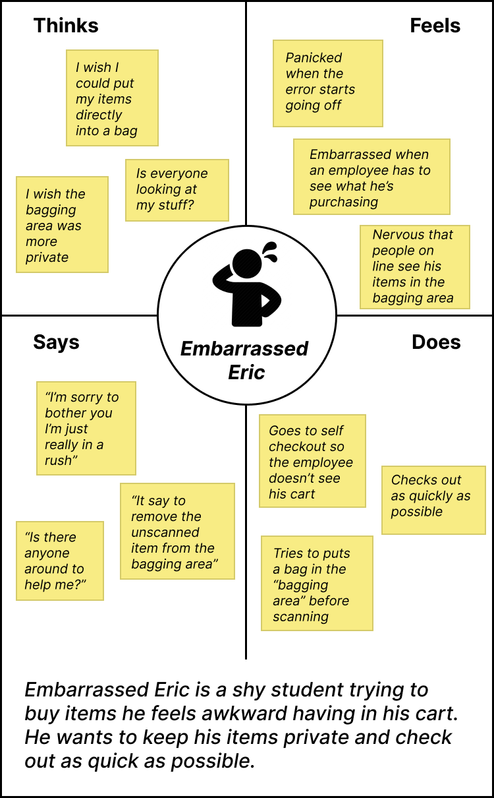
Storyboards
I created a storyboard for Busy Ben to better understand his entire user journey.
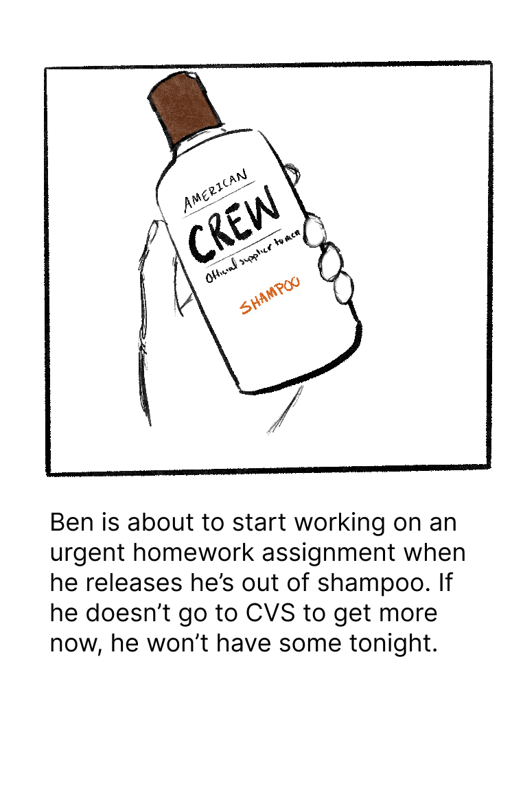
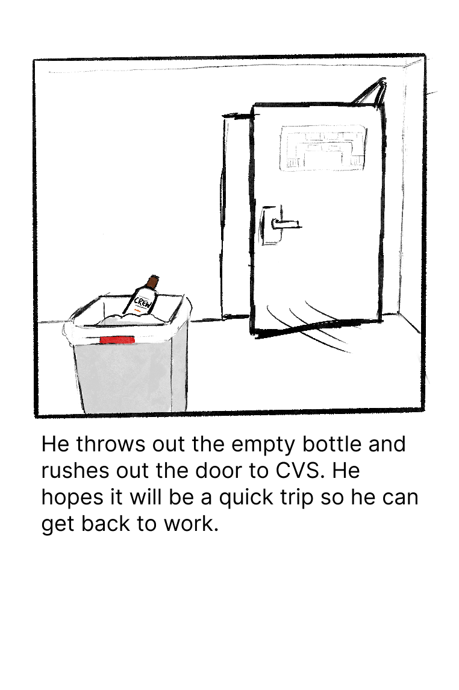
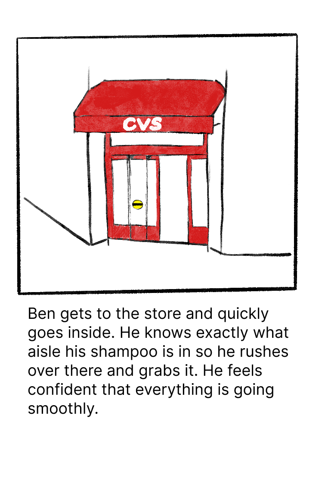
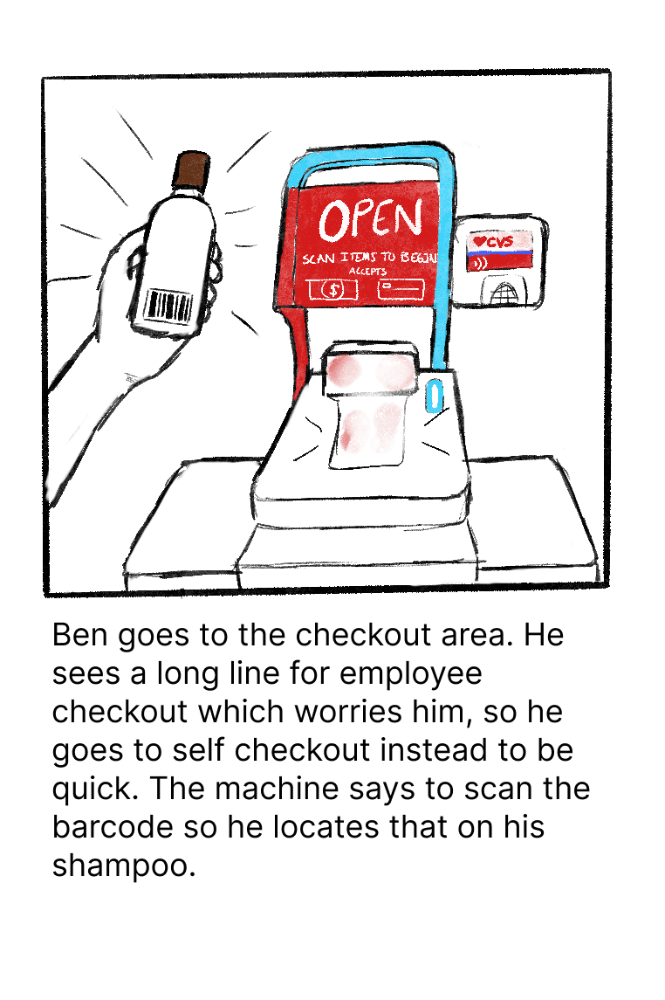
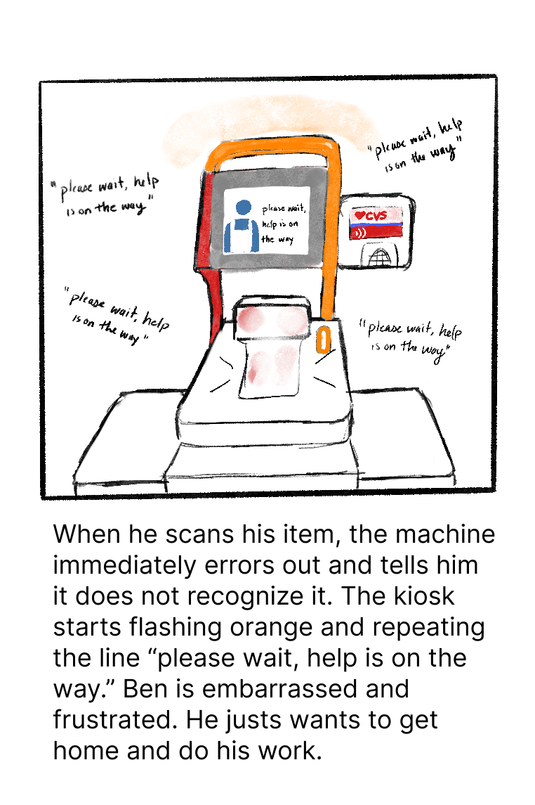
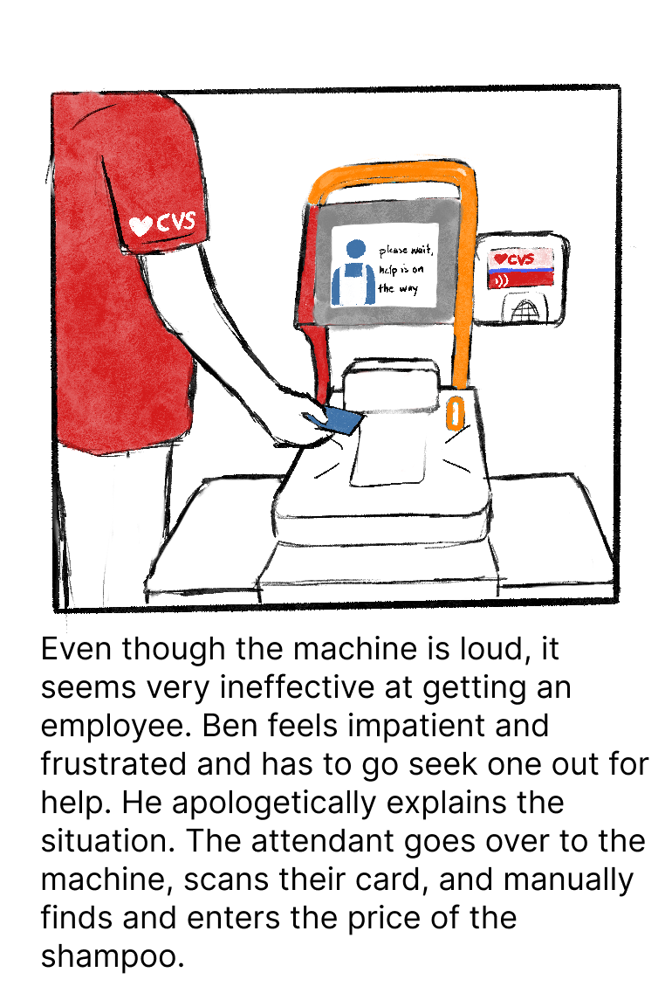
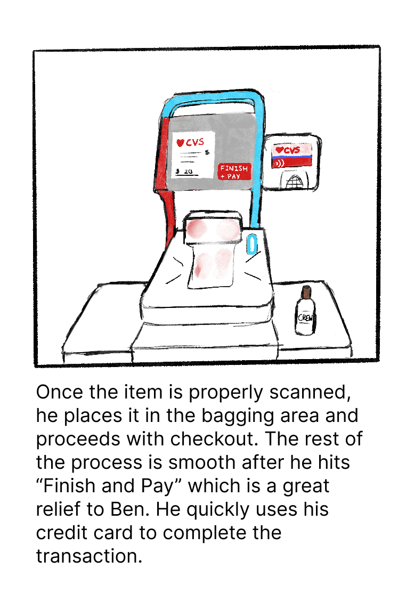
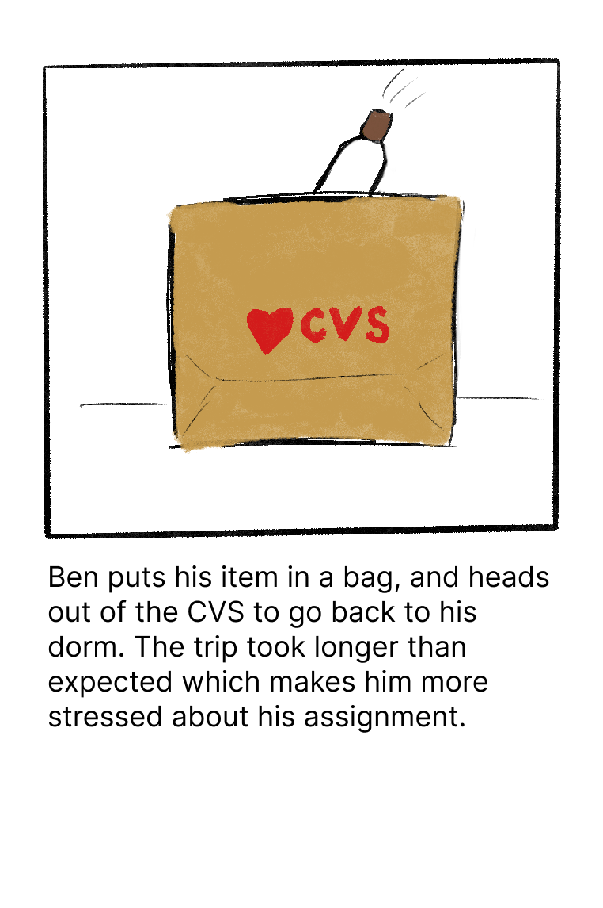